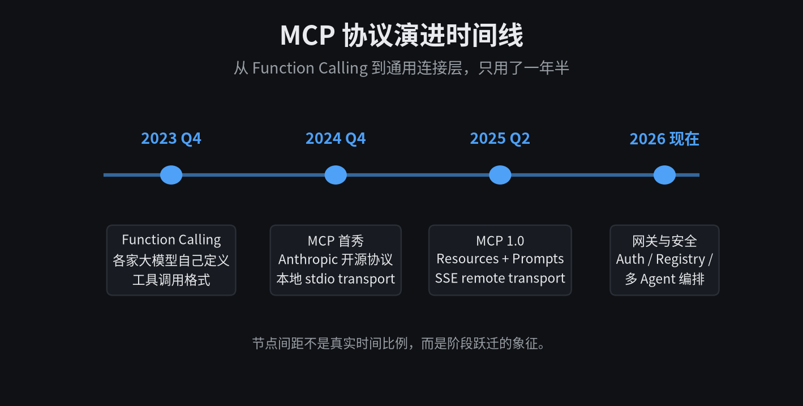
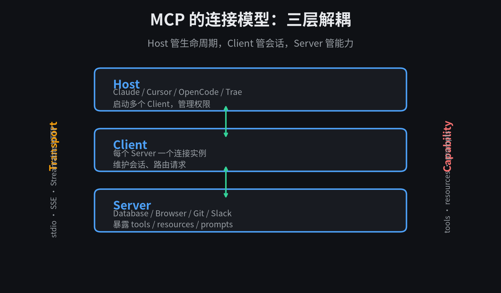
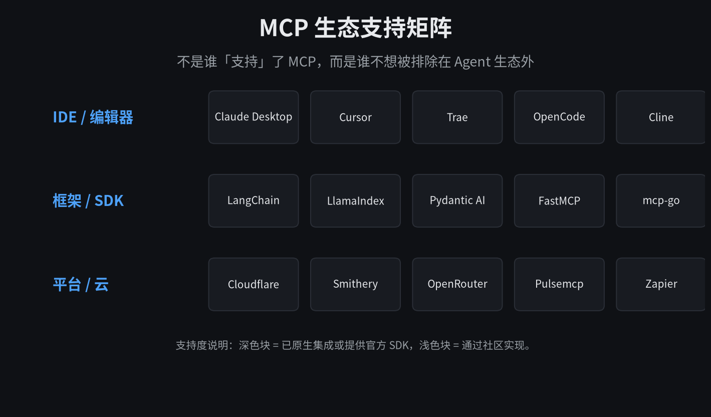
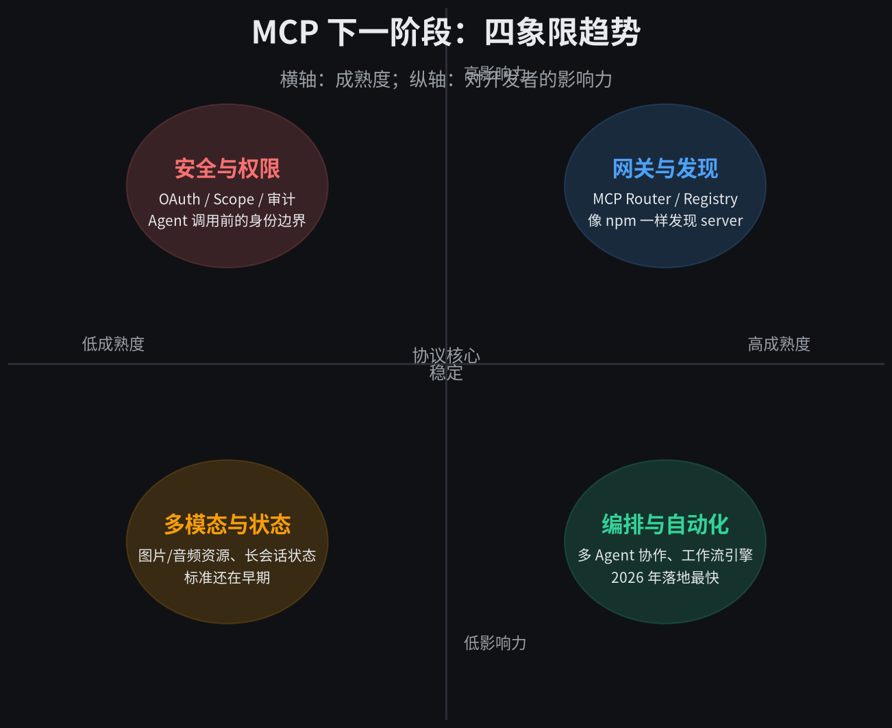

从 Function Calling 到通用连接层，MCP 用了一年半。
去年这个时候，我还在给每个 Agent 项目写一堆 adapter。OpenAI 的函数调用是一种格式，Anthropic 是另一种，本地脚本又要自己解析参数。每接入一个新工具，至少要改三处：prompt 里的描述、运行时的调用、返回结果的处理。
今年完全不一样了。MCP 这个词在开发者圈子里几乎绕不开。它不是什么新的大模型，也不是新的训练方法。它是一个协议，一个让 AI 应用统一调用外部工具的协议。
我想聊聊它的演进趋势。不是复述官方文档，而是回答一个我真正关心的问题——它会把我们带向哪里。
01
它到底解决了什么问题
AI 应用要干实事，离不开工具。查数据库、读邮件、改代码、操作浏览器、调 Slack。问题是，每个工具的接口都不一样。
以前的做法是，开发者自己把每个 API 包一层，写 schema，写 prompt 示例，写错误处理。然后把这个大包袱塞进 system prompt。模型能不能调对，全靠 prompt 写得好不好。
这带来两个后果。一是每个项目都在重复造轮子。二是工具一多，prompt 越来越长，模型越来越容易选错。
MCP 的解法很直接。它把「工具长什么样、怎么调用、返回什么」标准化了。模型和工具之间不再是一对一的 adapter，而是统一协议。
你可以把它理解成 AI 应用的 USB-C。以前每个设备一根专用线，现在一个口能接键盘、显示器、硬盘、充电器。
02
三条主线在同时推进
MCP 的演进不是单点的，是三条线同时拉长。看懂这三条线，基本就能判断它接下来往哪走。
第一条线，是能力模型在膨胀。
最早 MCP 只有 tools，就是让模型调函数。很快加入了 resources，工具可以暴露文件、数据库记录、网页内容这类只读资源。后来又加了 prompts，允许 server 预置系统提示词和请求模板。
这个顺序很有意思。先解决「能做什么」，再解决「能读什么」，最后解决「该怎么说」。它把 Agent 的能力从「调用动作」扩展到「理解上下文」再到「塑造行为」。
第二条线，是 transport 在走出本地。
2024 年底的 MCP 基本是 stdio，server 作为本地子进程跑在 Claude Desktop 或 Cursor 里。这种方式简单，但只能连本机工具。
2025 年 remote transport 登场，SSE、Streamable HTTP 让 server 可以跑在云端。这意味着 SaaS 产品可以直接对外暴露 MCP 接口，用户不用下载任何东西。
第三条线，是从单 Agent 到多 Agent 编排。
一个 Agent 接一个 MCP server 是起点。真正有用的是多个 Agent，每个 Agent 有自己的工具集，彼此之间还能协作。MCP 正在成为 Agent 编排层的基础设施。

Host / Client / Server 三层解耦，transport 和能力是两条可以独立演进的边。
03
生态已经挡不住了
判断一个协议能不能成，看生态比看设计更重要。MCP 的生态扩张速度，是我一开始没料到的。
Claude Desktop 是第一家原生支持 MCP 的客户端。Cursor、Trae、OpenCode、Cline 这些 AI 编程工具很快跟上。它们的逻辑很简单：谁支持的 MCP server 多，谁的 Agent 就能干更多事。
框架层也没闲着。LangChain、LlamaIndex、Pydantic AI 都接入了 MCP。FastMCP 让 Python 开发者几行代码就能写一个 server，mcp-go 和 mcp-rs 覆盖了另外两大语言栈。
更意外的是平台层。Cloudflare 给 Workers 加了 MCP 支持，Smithery 和 Pulsemcp 在做 MCP server 市场，OpenRouter 把它融进模型路由，Zapier 则用 MCP 连接成千上万的自动化应用。

从 IDE 到框架到云平台，MCP 正在变成默认接口。
这说明一件事。MCP 不再是某个厂商的私货，它正在成为 Agent 生态的「最小公约数」。不支持 MCP，等于把自己排除在 Agent 的工具网络之外。
04
下一步，四个方向最值得关注
协议核心已经相对稳定。接下来真正的战争，发生在四个外围方向。
第一个方向是安全与权限。Agent 能调用数据库、能发邮件、能改代码，这种能力必须有边界。OAuth、scope、审计日志、危险操作拦截，都会成为 MCP 的标配。没有这些，企业不敢接。
第二个方向是网关与发现。现在找一个 MCP server，要去 GitHub 或各种 registry 翻。未来一定会有类似 npm 的中心化发现层，也会有企业内部网关，统一托管权限和连接。
第三个方向是多模态与状态。现在的 MCP 主要还是围绕文本。图片、音频、视频资源的传递，以及跨会话的状态管理，标准还在早期。
第四个方向是编排与自动化。2026 年这个方向会落地最快。多 Agent 协作、工作流引擎、触发器，本质上都是把 MCP server 当作积木来拼装。

成熟度高低是暂时的，影响力大小取决于你处在哪一环。
05
开发者现在能做什么
对普通开发者来说，MCP 最大的机会不是去写协议本身，而是把手里现有的系统包成 MCP server。
你公司内部的 CRM、工单系统、监控平台、知识库，这些都可以是 server。一旦包好了，任何支持 MCP 的 Agent 都能直接调用，不需要再一对一集成。
具体操作上，我建议从 FastMCP 或 mcp-go 开始。写一个 server 的成本，已经低到半小时就能跑通一个最小版本。
# 一个最小 MCP server（FastMCP）
from mcp.server.fastmcp import FastMCP
mcp = FastMCP("my_tool")
@mcp.tool()
def get_user(name: str) -> str:
"""根据名字查询用户信息"""
return f"hello, {name}"
if __name__ == "__main__":
mcp.run()
当然也有坑。transport 选 stdio 还是 SSE，要看场景。本地工具用 stdio 最简单，远程服务必须上 HTTP。权限目前还不是特别完善，生产环境一定要自己加一层审计。
另外，prompt injection 这类风险真实存在。如果 server 的 tool 描述写得太宽泛，模型可能被诱导调用不该调用的东西。描述要写精确，返回结果要校验。
06
它真正改变的不是技术，而是分工
我把 MCP 理解成一个分界点。
在此之前，做 AI 应用的人，很大一部分精力花在「让模型能调用外部世界」。写 schema、调 prompt、处理异常、维护 adapter。每个项目都是定制工程。
在此之后，这些会沉淀成可组合的模块。模型负责判断，MCP server 负责执行，开发者负责设计能力和边界。分工变清晰了，创新反而更快。
它不是在给模型增加能力，而是在给世界增加一个能被模型理解的接口。
所以 MCP 的终局，也许不是某个协议一统天下，而是让「一切工具都能被 Agent 调用」变成默认假设。就像我们默认网页都有 URL、默认 API 都返回 JSON 一样。
到那时候，竞争的重点会从「我能不能连上这个工具」，变成「我能不能设计出让 Agent 用得好的工具」。
给模型造环境，而不是只给模型写 prompt。
这句话可能是 MCP 带给我们的最大启示。